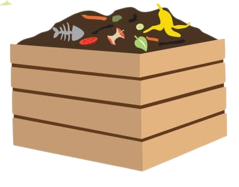
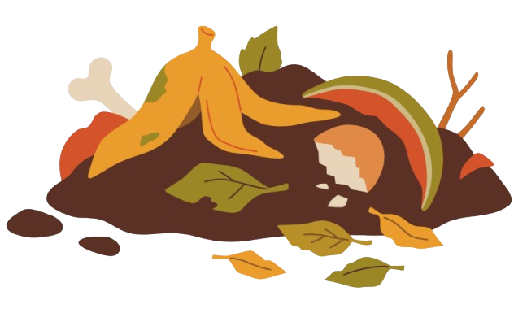

Sua História
ㅤㅤO conceito de material orgânico é profundo e se relaciona com a vida em nosso planeta. Desde os primórdios da civilização, os seres humanos têm utilizado materiais orgânicos, como madeira, fibras vegetais e resíduos alimentares, para diversas finalidades. Esses materiais são provenientes de organismos vivos e são essenciais para a manutenção dos ecossistemas.
ㅤㅤCom o passar dos séculos, a compreensão sobre a importância dos materiais orgânicos foi crescendo. Eles são usados em construção, fabricação de utensílios, e na agricultura como fertilizantes naturais. A Revolução Industrial trouxe desafios, pois a exploração excessiva de recursos naturais começou a impactar o meio ambiente, despertando a necessidade de práticas mais sustentáveis.
ㅤㅤAtualmente, os materiais orgânicos estão no centro das discussões sobre sustentabilidade e preservação ambiental. Eles são essenciais para a economia circular, promovendo o reaproveitamento e a reciclagem, além de contribuírem para a saúde do solo e a biodiversidade.
Composição
ㅤㅤMateriais orgânicos são compostos principalmente por carbono, hidrogênio, oxigênio e, em menor quantidade, outros elementos como nitrogênio e fósforo. Esses elementos são encontrados em compostos como celulose, lignina, proteínas e lipídios, que variam conforme a fonte do material.
ㅤㅤPor exemplo, a celulose é uma fibra que compõe as paredes celulares das plantas, enquanto os lipídios são encontrados em óleos vegetais. Esses materiais são fundamentais para a produção de uma variedade de produtos, desde papel até biocombustíveis, promovendo um uso sustentável dos recursos naturais.
Tipos de Material Orgânico
| Tipo | Aplicações |
|---|---|
| Resíduos alimentares | Utilizados para compostagem, gerando adubo orgânico. |
| Fibras naturais | Usadas na confecção de roupas e tecidos. |
| Madeira | Usada na construção civil e mobiliário. |
| Biocombustíveis | Produzidos a partir de materiais orgânicos, como etanol e biodiesel. |
| Papel reciclado | Feito de fibras recuperadas, é uma opção sustentável. |
| Composto orgânico | Usado na agricultura para melhorar a qualidade do solo. |
| Plásticos biodegradáveis | Feitos a partir de materiais orgânicos, degradam-se no ambiente. |
Como Funciona a Compostagem
ㅤㅤA compostagem é um processo natural e biológico que transforma resíduos orgânicos em um adubo rico em nutrientes, conhecido como composto. Esse processo não apenas reduz a quantidade de lixo que vai para os aterros sanitários, mas também enriquece o solo, promovendo a saúde das plantas. O primeiro passo é a coleta de resíduos, que pode incluir restos de frutas, verduras, folhas secas, cascas de ovos, borra de café e outros materiais orgânicos.
ㅤㅤÉ fundamental equilibrar a quantidade de materiais "verdes", que são ricos em nitrogênio, e "marrons", que são ricos em carbono. Os materiais verdes incluem restos de alimentos e grama cortada, enquanto os materiais marrons incluem folhas secas, papel picado e galhos. A proporção ideal é geralmente de 1 parte de materiais verdes para 3 partes de materiais marrons. Esse equilíbrio é crucial para um processo de decomposição eficiente e para evitar odores desagradáveis.
ㅤㅤApós a coleta, os materiais são dispostos em uma pilha ou dentro de um compostor. Neste ambiente, uma variedade de microrganismos, como bactérias e fungos, iniciam a decomposição dos resíduos orgânicos. Eles se alimentam da matéria orgânica, quebrando-a em componentes mais simples. Durante o processo, é necessário aerar a mistura, virando-a regularmente, e monitorar a umidade. Um composto úmido, mas não encharcado, é ideal para garantir que a atividade microbiana ocorra de forma eficaz.
ㅤㅤO tempo de compostagem pode variar amplamente, dependendo das condições ambientais, do tipo de materiais utilizados e da forma como o composto é gerenciado. Em geral, o processo pode levar de alguns meses a um ano. O composto estará pronto quando tiver uma textura escura, homogênea e um cheiro terroso agradável. Esse composto final pode ser utilizado como adubo em jardins, hortas e plantações, fornecendo nutrientes essenciais para as plantas e melhorando a qualidade do solo.
ㅤㅤO resultado final é um composto rico em nutrientes, que pode ser utilizado na jardinagem e agricultura, fechando o ciclo de vida dos materiais orgânicos e promovendo a saúde do solo.
O que pode e o que não pode ser Compostado
| O que Pode ser Compostado | O que Não Pode ser Compostado |
|---|---|
| Restos de frutas e vegetais | Carnes e peixes |
| Cascas de ovos | Produtos lácteos |
| Folhas secas e grama cortada | Óleos e gorduras |
| Papel e papelão não revestidos | Resíduos de plantas doentes |
| Restos de café e borra de café | Resíduos químicos ou contaminados |
| Palha e feno | Produtos de limpeza químicos |
| Podas de plantas | Frutas e vegetais com mofo ou deteriorados |
| Troncos e galhos pequenos (triturados) | Plásticos e metais |
Métodos de Compostagem
ㅤㅤExistem diversos métodos de compostagem que podem ser utilizados, dependendo do espaço disponível, do volume de resíduos e das preferências pessoais. Aqui estão alguns dos principais métodos:
Compostagem em Pilha: Este é o método mais simples, onde os resíduos são empilhados em um canto do jardim. A pilha deve ser monitorada, virada regularmente para aerar e misturar os materiais. É ideal para grandes volumes de resíduos.
Compostagem em Compostor: Utilizando um recipiente específico para compostagem, este método mantém os resíduos organizados e pode acelerar o processo de decomposição. Compostores podem ser comprados ou feitos em casa, e muitos modelos têm recursos de ventilação e drenagem.
Compostagem em Tumba: Esse método é realizado em um buraco ou vala no solo, onde os materiais são depositados e cobertos. A tumba deve ser mantida úmida e aerada. É uma opção prática para quem tem espaço e deseja um método mais discreto.
Vermicompostagem: Este método utiliza minhocas (geralmente da espécie Eisenia fetida) para decompor os resíduos orgânicos. As minhocas se alimentam dos restos de alimentos e, em troca, produzem um composto rico em nutrientes, chamado húmus. A vermicompostagem é ótima para espaços pequenos, como apartamentos.
Compostagem em Caixa de Compostagem: Semelhante ao compostor, mas geralmente feita de madeira ou plástico, a caixa é uma estrutura fechada que ajuda a controlar o ambiente de compostagem. É ideal para pequenos espaços e facilita a aeração e o manejo dos resíduos.
Sistema de Húmus de Minhoca: Um sistema que combina a compostagem tradicional com a vermicompostagem, onde as minhocas são introduzidas em uma pilha de compostagem para acelerar a decomposição e enriquecer o material resultante.
ㅤㅤCada método de compostagem tem suas vantagens e desvantagens, e a escolha depende das necessidades individuais e das condições locais. Independente do método escolhido, todos contribuem para a redução de resíduos e promovem a saúde do solo.
O Passo a Passo da Compostagem
ㅤㅤA compostagem é um processo simples que pode ser realizado em casa ou em maior escala. Seguir um passo a passo facilita a produção de composto de qualidade. Aqui estão as etapas essenciais:
Escolha um Local: Selecione um local bem drenado e arejado para montar seu compostor. Isso pode ser um canto do seu quintal ou um recipiente específico para compostagem.
Escolha um Compostor: Você pode comprar um compostor ou construir um usando paletes de madeira, caixas plásticas ou tambores. Certifique-se de que o recipiente tenha ventilação adequada.
Coleta de Materiais: Junte materiais "verdes" (ricos em nitrogênio, como restos de frutas, verduras e borra de café) e "marrons" (ricos em carbono, como folhas secas, papel picado e palha). O ideal é uma proporção de 1 parte de materiais verdes para 3 partes de materiais marrons.
Montagem das Camadas: Comece a empilhar os materiais no compostor, alternando camadas de materiais verdes e marrons. Isso ajuda a aerar a mistura e acelerar a decomposição.
Manutenção: Mantenha o composto úmido, mas não encharcado. Umidade adequada é crucial para a atividade microbiana. Vire a mistura a cada 2 a 4 semanas para garantir a aeração e acelerar o processo de decomposição.
Monitoramento: Fique atento ao cheiro e à temperatura do composto. Um odor desagradável pode indicar que a mistura está muito compacta ou com excesso de umidade. Ajuste conforme necessário.
Tempo de Decomposição: O tempo total de compostagem pode variar de 2 a 6 meses, dependendo das condições e dos materiais. O composto está pronto quando a textura é escura e homogênea, e não há restos visíveis.
Utilização do Composto: Quando o composto estiver pronto, utilize-o em jardins, hortas ou vasos. Ele fornece nutrientes essenciais e melhora a qualidade do solo.
ㅤㅤSeguir esse passo a passo garante que você produza um composto saudável e rico em nutrientes, contribuindo para um ciclo sustentável de manejo de resíduos e jardinagem.